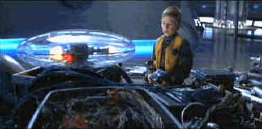

New Line/1998/108m/ANA,WS 2.35,PS 1.33
 |
Will puts the robot pieces together again.©New Line |
Time's running out
on Earth. In a mere decade the planet will no longer be able to support life. Dr. Robinson
with his family as crew takes on the task of using the hyperdrive he developed to catapult
a spaceship to a distant planet to prepare for colonization. Use of the hyperdrive allows
the Robinson family to travel into the future to pave the way for Earth's evacuation. The
Villainous saboteur is the ridiculous Dr. Smith. The real adventure begins when Smith's
sabotage backfires and leaves the ship Lost in Space.
Will the Robinson's find their way back home? Will they
be able to save the Earth? Will Penny Robinson fall in love with hot shot pilot Major
West? Will Doctor and Mrs. Robinson get through a stressful patch in their marriage. Will
Dr. Smith's punishment fit the crime? And will the robot repeat the words "Danger
Will Robinson!"? For answers to these and the ultimate question, why Lost in Space
was made, tune in to this information packed special edition DVD.
Wow! This is some packed special edition. Two audio commentaries,
deleted scenes, a stash of cinematic energy, alas all about a movie as weak-legged as Lost
in Space. Judging from some of the deleted scenes, director Stephen Hopkins may have
been going for more silliness in his cut, but nothing was going to rescue this group of
space travelers from cinematic oblivion. The Lost in Space DVD also functions as
a DVD ROM, loading interactive software your computer. There’s a game to play, a
robot to use, and an Internet link to New Line. A copy of the script is included for your
enjoyment.
Lost in Space is a great DVD production, measuring up to
the standards of a effects laden science fiction film. Beautiful, deep blacks, full rich
colors and razor sharp images are implemented for the DVD voyage. Surround effects are
powerful and directional. A first rate production for a third rate movie.
 ã1998
Stuart J. Kobak , all rights reserved.
ã1998
Stuart J. Kobak , all rights reserved.